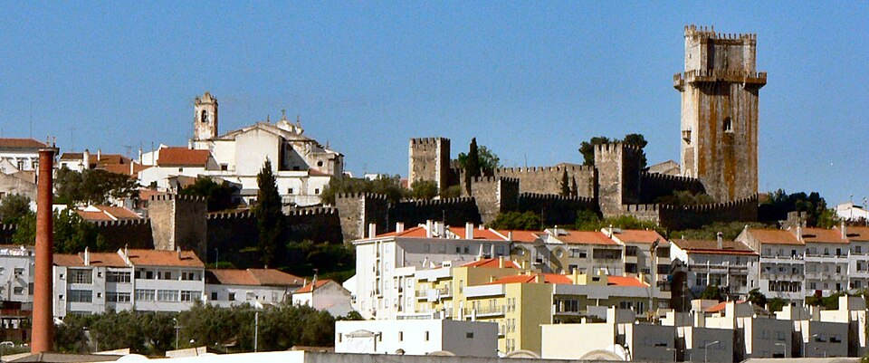

Turismo na cidade de Beja
Beja
Beja é uma cidade portuguesa do Distrito de Beja, encontrando-se inserida na sub-região do Baixo Alentejo (NUT III) e na região do Alentejo (NUT II), com 22 362 habitantes (2021).[1]É sede do Município de Beja que tem uma área total de 1 106,44 km2 e 33 401 habitantes (2021),[2] subdividido em 12 freguesias.[3] O município é limitado a norte pelos municípios de Cuba e Vidigueira, a leste por Serpa, a sul por Mértola e Castro Verde e a oeste por Aljustrel e Ferreira do Alentejo.
Ilha dos puxadoiros

Castelo de Beja.JPG) Fuerte de São Felipe
Fuerte de São Felipe